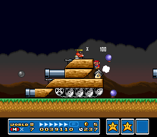
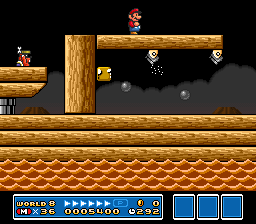
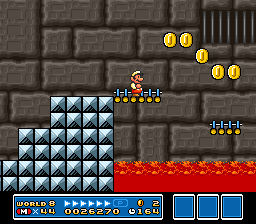
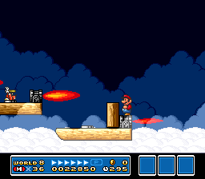
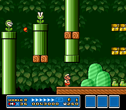
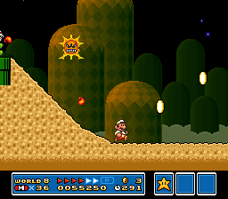
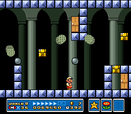
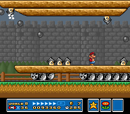
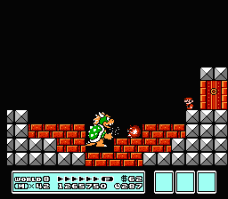

SUPER MARIO BROS. 3
Wiki
Levels
World 8 - Dark Land
| World | Image | Overview |
|---|---|---|
| World 8-  1 1 |
 | The first tank level of Dark Land. This is an autoscrolling level with many cannons that fire cannonballs and Bob-ombs. |
| World 8-  |
 | An autoscrolling level over water with many cannons. The player fights Boom Boom at the end. |
| World 8-  |
 |
First Hand Trap(right): A trail featuring a Fire Bro, a pair of Hammer Brothers, a Boomerang Bro, and a Sledge Bro. Second Hand Trap(center): A trail over a pool of lava with small platforms and several Podoboos between the gaps. Third Hand Trap(left): A trail featuring a long bridge over a pool of lava with infinite Cheep-Cheeps jumping out of the lava below. Completing each of the Hand Trap courses will award the player with a Super Leaf (three total). |
| World 8-  |
 | A fast autoscrolling level with small platforms up in the air. The player fights Boom Boom at the end. |
| World 8-1 |
 | The first of two standard levels in Dark Land. This level has many pipe platforms and Turtle Cannons firing Bullet Bills. |
| World 8-2 |
 | The second of the two standard levels in Dark Land. In this level, the Angry Sun from Desert Land makes a reappearance. |
| World 8-  |
 | This fortress is made up of a maze of doors and traps. |
| World 8- 2 |
 | The second tank level of Dark Land. This is also an autoscrolling level with many cannons that fire cannonballs and Bob-ombs. The player fights Boom Boom at the end. |
| World 8-  |
 | The final level of the game, where King Koopa is keeping Princess Toadstool captive. |